| Task No. | Task Image | Description |
|---|---|---|
| 001 | 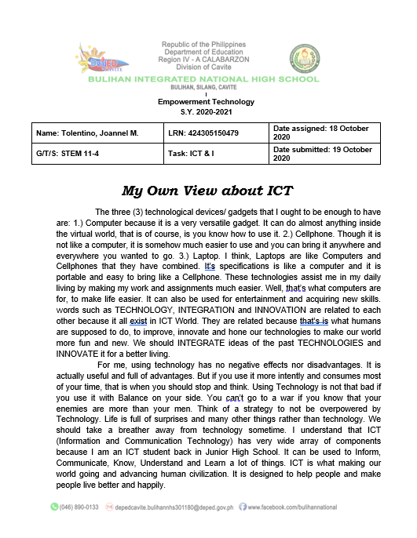 | I have shared my insights and views about this certain subject and what I am expecting to learn from it. I have also wrote about what I already know about this subject and the advantages I can get from it. |
| 002 | 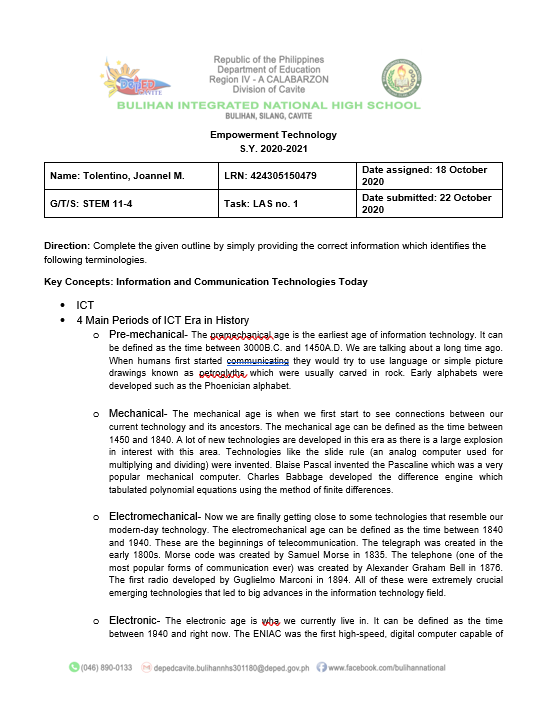 | In this task, I completed the following outline by providing accurate information which identifies the following terminologies. This topic mostly talks about the different era in the Technological World. |
| 003 | 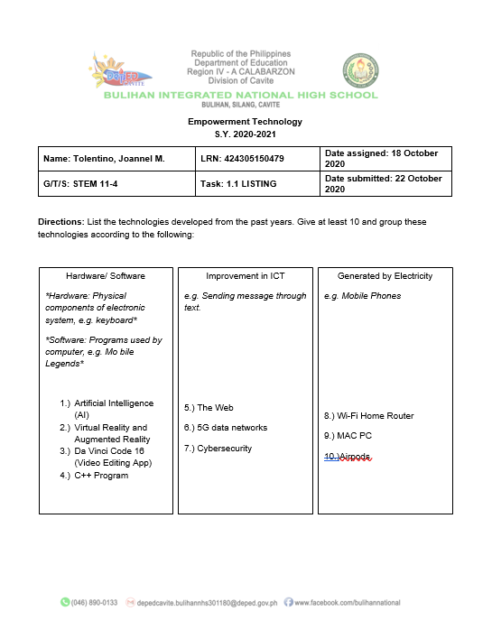 | In this task, I have listed technologies from the past years. I gave 10 and grouped them according to their proper places. I put them on either Hardware/Software, Improvement in ICT or Generated by Electricity. |
| 004 | 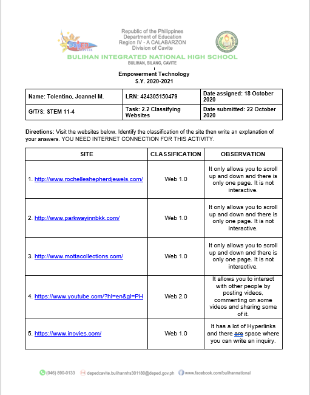 | I classified different sites in this task by identifying if they are WEB 1.0, WEB 2.0, WEB 3.0. |
| 005 | 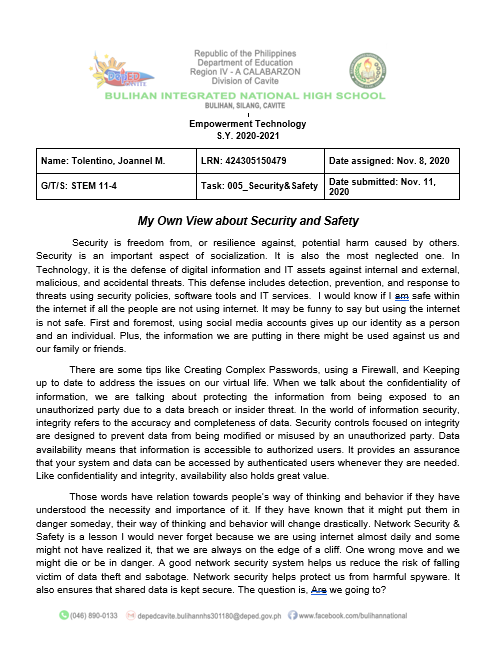 | In this specific task, I shared my own view about Security and Safety. |
| 006 | 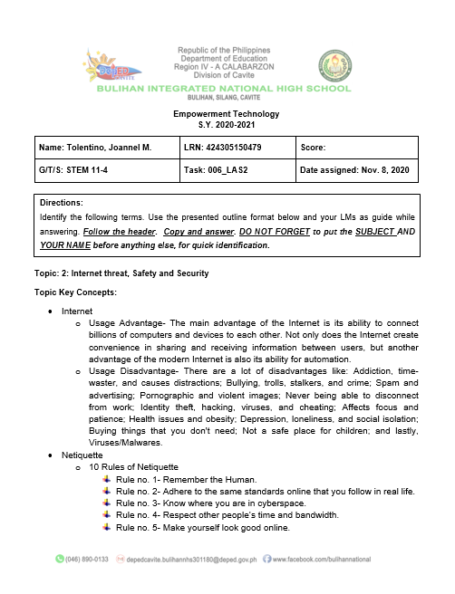 | This task requires me to identify different terminologies about Internet threat, Safety and Security. |
| 007 | 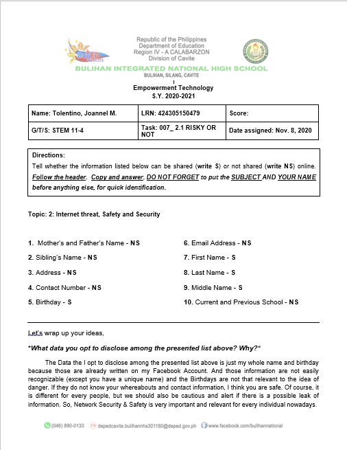 | In this task, I am asked what to share and what not to share in the following information. I am asked what data I opt to disclose among the presented list above and Why. |
| 008 | 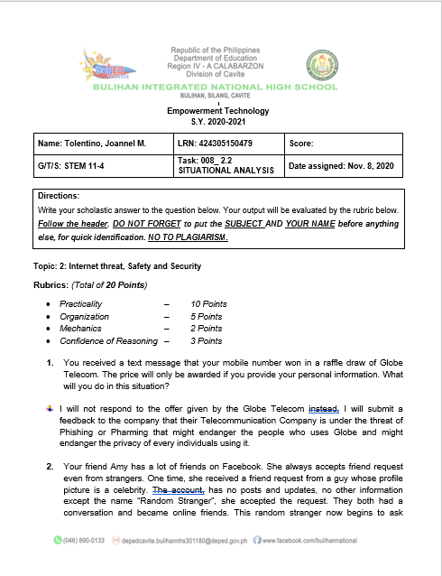 | This Task requires me to analyze differet situations involving Internet threats, Safety and Security. I stated what move I will take if I am in that situation. |
| 009 | 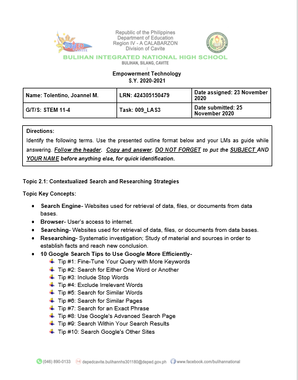 | In this task, I identified different terminologies about Contextualized Search and Researching Strategies and also the 10 Google search tips to use it more efficiently. |
| 010 | 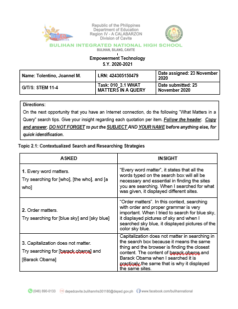 | This task is also included in the topic Contextualized Search and Researching Strategies where I give my own insights about the given sentences. |
| 011 | 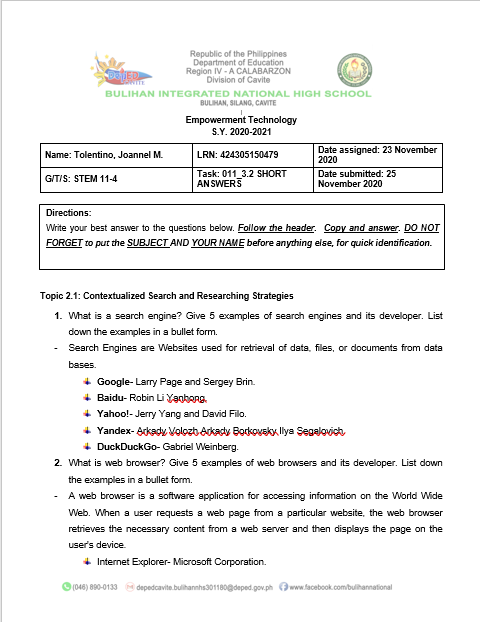 | This task requires me to give what information is needed. I shared my own ideas about Search and Researching Strategies. |
| 012 | 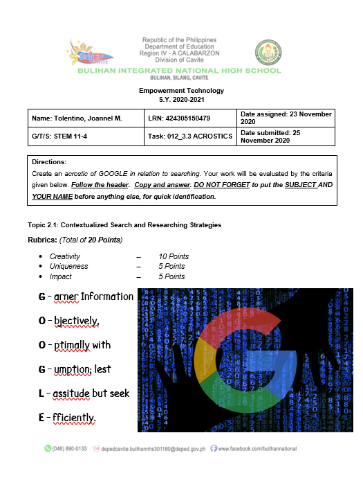 | In this task, I created an Acrostics of GOOGLE in relation to searching. |
| 013 | 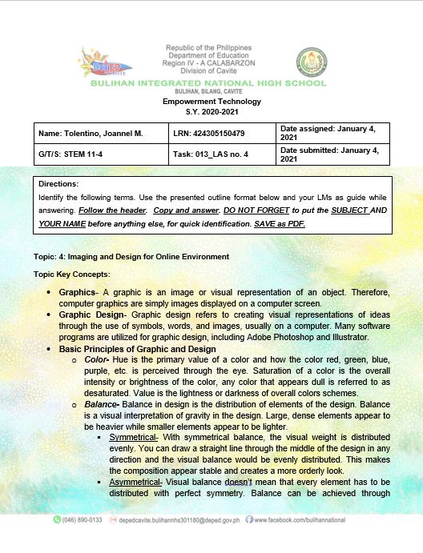 | This task requires me to provide the information needed and supply what is being asked. I also gave my own insights about different terminologies about Imaging and Design for Online Environment. |